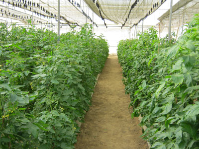

Green House Technology

polyhouse
Poly houses are basically naturally ventilated climate controlled. Poly houses have a variety of applications, the majority being, growing of vegetables, floriculture, planting material acclimatization, fruit crop growing for export market.
Poly houses are built of a Pre-galvanized channel cum tubular structure/ Tubular Structure wherein crops are grown under a favorable controlled environment and other conditions viz. temperature, humidity, light intensity, ventilation, soil media, disease control, irrigation, Fertigation and other agronomical practices throughout the season irrespective of the natural conditions outside.
In conventional Agronomical practices, the crops are being grown / cultivated in the open field under natural conditions where the crops are more susceptible to sudden changes in climate i.e. temperature, humidity, light intensity, photo period and other conditions due to which the quality, yield of a particular crop can get affected and may be decreased.
Poly houses are available in different sizes and constructed as per customer requirement. The sizes vary from as small as 100 Sq. M to 10,000 Sq M and more.
The degree of sophistication also varies from a simple poly house with polyethylene film covering to highly sophisticated, fully automated drip and foggers systems, PAR lightings, full scale computerized (fully automated) systems.
Components of Poly house
• Galvanized Steel Construction.
• Special Aluminum locking profile to fix covering materials with structure.
• Designed to withstand wind speed of 140 Kmph
• Bears, hanging load 15- 25 Kg per Sq. Mt.
• Natural Roof and side wall ventilation system.
• UV stabilized covering materials of Polyethylene film.
• Air circulation fans
• Heating system in cold climate.
• CO2 Generator.
• Shading / Thermal Net
• Trellising system for vegetable.
• Prefabricated structure which makes easy to assemble & dissemble.
• Complete structure is assembled with Nut-bolts.
• No welding is required.
• Control System - Manual / Semi Automatic / Automatic. Fully Computerized / Weather Station.
• Planting material- soil less media like coco peat.

Advantages of Poly house
• Yield increases by 5 - 10 times or even more.
• Uniform and better quality
• Reduction in labour cost
• Less fertilizer requirement, thus reduction in fertilizer cost.
• Low water requirement thus saving in water.
• Less chances of disease attack, thus reduction in disease control cost.
• Higher Efficiency of Water & Fertilizer Use.
• Cultivation in problematic topography.
• Cultivation in problematic soil conditions.
• Cultivation in problematic climate conditions.
• Requires less area to get maximum yield and benefits.
• Easy to operate, maintain & control.
More Info